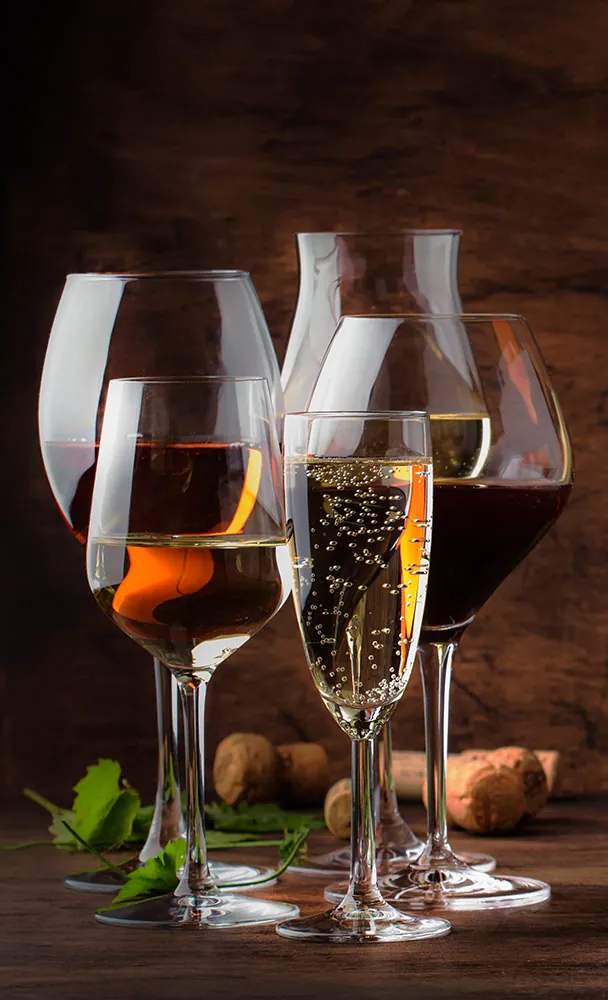

Restauracje, puby, sklepy winiarskie
Jeden kran z frizzante obok piwa to prosty sposób na nową pozycję w karcie. Wino z KEGa nie utlenia się, więc nalewasz tyle, ile zamówi gość.
- przy dłuższej współpracy instalację przekazujemy w użytkowanie
- bezpłatny serwis instalacji (bez butli gazu)
- Warszawa i województwo mazowieckie